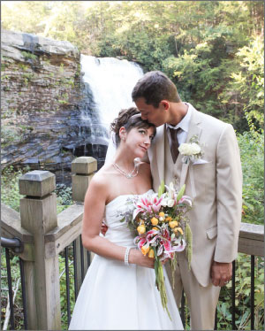
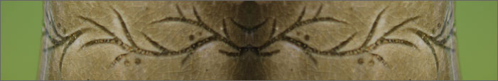
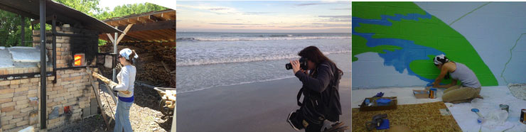

Meet the Artist
My name is Carly Wiesinger Di Paolo. I live and work in Pennsylvania, a landlocked, rectangular shaped commonwealth in the eastern United States. I am at my best when I am working with my hands, creating something unique, and moving forward knowing that the world is a little more interesting with another artwork in it. I hope my art will make your world a little more interesting, too.
Inspiration
I am blessed to have grown up in the suburbs of Pittsburgh, an area where a short drive in just about any direction leads to beautiful old growth forests, expansive gorges, winding white rapids, and elegant waterfalls. My parents are always very proud to tell stories of taking me camping before I could even walk.
Camping in the Pennsylvania wilderness, 1981
My love for the natural world is the driving force behind the style of my work. I am always searching for new ways to convey my delight and amazement at the majesty and mystery of nature. With a life-time full of excursions into wild and beautiful places, the sources of inspiration mother nature provides are endless.
My earliest memories include catching inchworms and caterpillars in the undergrowth, and meals around the picnic table next to the campfire. As I grew, my desire to explore and enjoy nature grew with me, and my childhood wonder and excitement when entering the forest has never waned...
My dream wedding, Swallow Falls, MD, 2013
I find myself constantly interpreting and emulating her nuances and juxtapositions. My artwork is a tribute to her soft curves and jagged edges, her vastness and her intricate details, her ebbs, flows, and glorious interwoven circles of growth, decay and evolution.
Process
I have developed a true passion for exploring new techniques and expanding my skill set. I am constantly toggling between mediums, finding balance in diversity. After several muddy months in the ceramics studio, it is very refreshing to sit down in crisp, clean clothes and work on a design in the Adobe Creative Suite. My love for the outdoors lends itself to certain processes, such as firing wood-kilns and spray paint stenciling. In the evenings, I find nothing more relaxing than settling in with my sketchbook and drawing flowers, fish or birds until I become drowsy. My husband, so very supportive, has learned from experience to stay on the lookout for rogue pencils under our bed covers!
With each new day, I feel driven to continue learning, trying new things, and growing as an artist. I am very excited share my work with you, and to foster Create And Love’s reputation as a purveyor of unique, high-quality goods to enhance everyday living.
Education
- - Associates Degree, Graphic Communications Track, CCAC, Pittsburgh, PA, Graduation Date, 2014
- - Art-Education Post-Baccalaureate Certification, Carlow University, Pittsburgh, PA, 2010
- - Bachelor of Fine Arts Degree, Ceramics, Indiana University of Pennsylvania, Indiana, PA, 2002
- - National Student Exchange, Western Washington University, Bellingham, WA, 2001
- - REC Honors College Study Abroad, Indiana University of Pennsylvania, Vienna, Austria, 1999